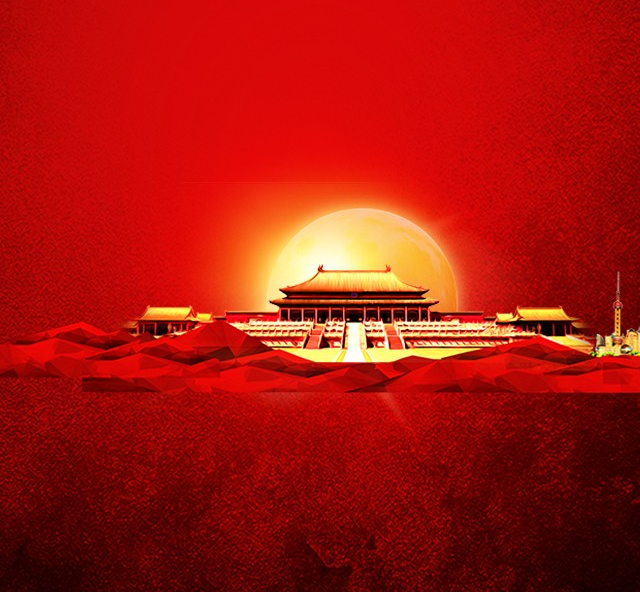

1949.10.01——2019.10.01

五星红旗是中华人民共和国的国旗，是国家的象征和标志，《国旗法》规定：每个公民与组织“都应当尊重和爱护国旗”。今天，让我们回顾关于国旗的几个难忘瞬间，一起为伟大祖国点赞、加油！
1949年10月1日
中华人民共和国成立
中华人民共和国成立
1949年10月1日，开国大典之上，毛主席在天安门城楼上亲手按动电钮，第一面五星红旗在天安门广场上冉冉升起。这面五星红旗从此飘扬于东方，中国人民从此站起来了，成为国家的主人。
1960年5月25日
登上峰珠穆朗玛峰
登上峰珠穆朗玛峰
1960年5月25日，中国登山队从东北山脊登上海拔8848.13米的世界最高峰珠穆朗玛峰，首创从北坡登上珠峰的世界纪录，五星红旗第一次飘扬在世界之巅。
1971年10月25日
加入联合国
加入联合国
1971年10月25日，联合国第二十六届大会通过表决，决议恢复中华人民共和国的一切权利，承认它的政府的代表为中国在联合国组织的唯一合法代表。从此，中华人民共和国的五星红旗开始飘扬在联合国大厦前的广场上。
1984年7月29日
第一枚奥运金牌
第一枚奥运金牌
1984年7月29日，在洛杉矶奥运会上，27岁的射击运动员许海峰为中国夺得第一枚奥运会金牌, 奥运史上第1次奏起中华人民共和国国歌，升起中华人民共和国国旗。
1997年7月1日
香港回归
香港回归
1997年7月1日，中华人民共和国政府对香港恢复行使主权，五星红旗和香港特区区旗冉冉升起，洗刷了民族百年耻辱，完成了实现祖国完全统一的重要一步。
2003年10月15日
五星红旗太空飘扬
五星红旗太空飘扬
2003年10月15日，杨利伟乘“神舟”五号在太空展示五星红旗，成为中国第一位在太空展示五星红旗的航天员。
2019年8月4日
香港事件
香港事件
2019年8月4日，十余名香港市民自发升起被暴徒撤下丢弃的国旗，旗帜鲜明地弘扬爱国爱港正能量。五星红旗，会永远在香港上空高高飘扬！
70年来，五星红旗一次次高高飘扬，展示了国家的尊严、凝聚了人民的力量，也见证了中华民族站起来、富起来到强起来的复兴之路。让我们勇敢肩负起时代赋予的重任，努力在实现中华民族伟大复兴的中国梦的生动实践中放飞青春梦想。